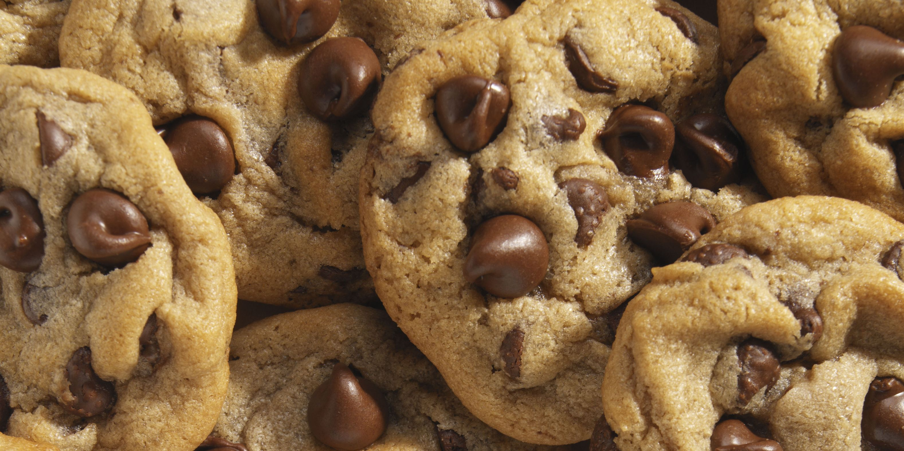

Chocolate Chip Cookies
Ingredients:
- 2 1/4 cups all-purpose flour
- 1 tsp baking soda
- 1 tsp salt
- 1 cup unsalted butter, at room temperature
- 3/4 cup white granulated sugar
- 3/4 cup brown sugar
- 2 large eggs
- 2 tsp vanilla extract
- 2 cups semisweet chocolate chips
Instructions:
- Preheat oven to 375°F (190°C).
- In a small bowl, combine flour, baking soda, and salt. Set aside.
- In a large bowl, cream butter and sugars until light and fluffy.
- Add eggs, one at a time, beating well after each addition.
- Stir in vanilla extract.
- Gradually add flour mixture to creamed mixture and mix well.
- Stir in chocolate chips.
- Drop by rounded tablespoonfuls onto ungreased baking sheets.
- Bake for 8-10 minutes or until lightly browned.
- Cool on wire racks.